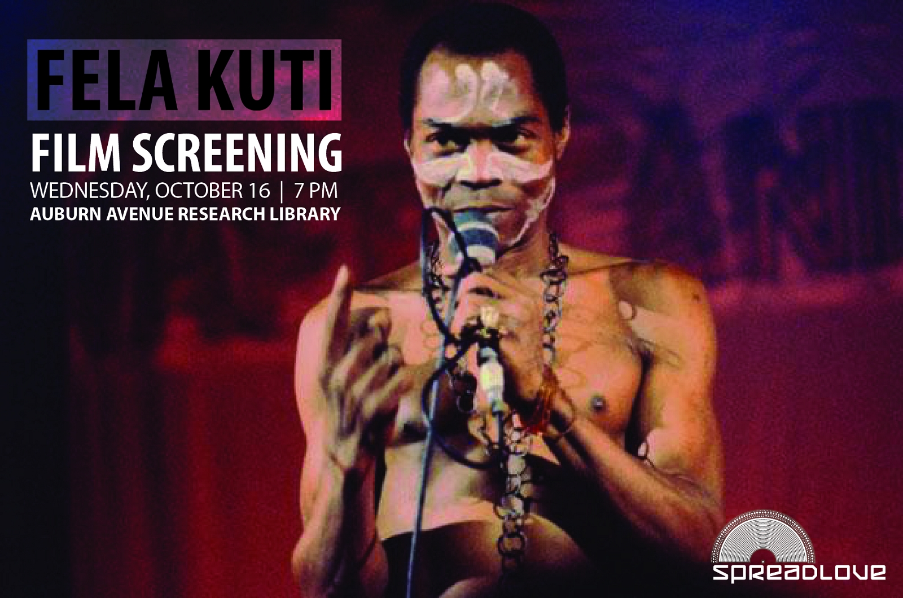
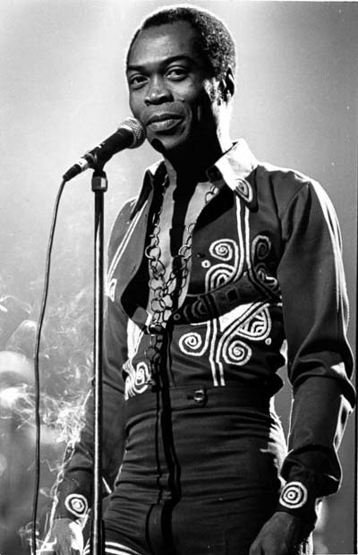
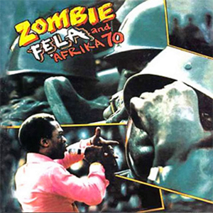
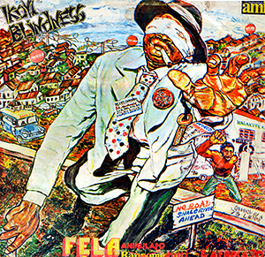
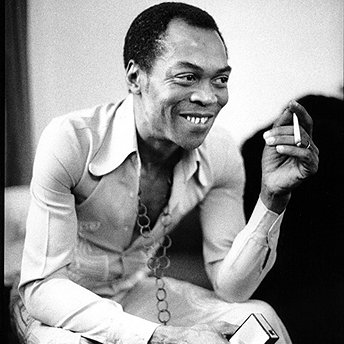

Fela Kuti
Fela Kuti (born Olufela Olusegun Oludotun Ransome-Kuti; 15 October 1938 – 2 August 1997) also known as Fela Anikulapo Kuti or simply Fela ([feˈlæ]), was a Nigerian multi-instrumentalist, musician, composer, pioneer of the Afrobeat music genre, human rights activist, and political maverick.
Biography
Early Life And Career
Fela was born Olufela Olusegun Oludotun Ransome-Kuti on 15 October 1938 in Abeokuta, Ogun State, Nigeria into an upper-middle-class family. His mother, Funmilayo Ransome-Kuti, was a feminist activist in the anti-colonial movement; his father, Reverend Israel Oludotun Ransome-Kuti, a Protestant minister and school principal, was the first president of the Nigeria Union of Teachers. His brothers, Beko Ransome-Kuti and Olikoye Ransome-Kuti, both medical doctors, are well known in Nigeria. Fela was a first cousin to the Nigerian writer and Nobel laureate Wole Soyinka, the first African to win a Nobel Prize for Literature.
Fela was sent to London in 1958 to study medicine but decided to study music instead at the Trinity College of Music. While there, he formed the band Koola Lobitos, playing a fusion of jazz and highlife. In 1960, Fela married his first wife, Remilekun (Remi) Taylor, with whom he would have three children (Femi, Yeni, and Sola). In 1963, Fela moved back to Nigeria, re-formed Koola Lobitos and trained as a radio producer for the Nigerian Broadcasting Corporation. He played for some time with Victor Olaiya and his All Stars.
In 1967, he went to Ghana to think up a new musical direction. That was when Kuti first called his music Afrobeat. In 1969, Fela took the band to the United States where they spent 10 months in Los Angeles. While there, Fela discovered the Black Power movement through Sandra Smith (now Sandra Izsadore), a partisan of the Black Panther Party. The experience would heavily influence his music and political views. He renamed the band Nigeria '70. Soon, the Immigration and Naturalization Service was tipped off by a promoter that Fela and his band were in the U.S. without work permits. The band immediately performed a quick recording session in Los Angeles that would later be released as The '69 Los Angeles Sessions.
1970s
After Fela and his band returned to Nigeria, the band was renamed The Afrika '70, as lyrical themes changed from love to social issues. He then formed the Kalakuta Republic, a commune, a recording studio, and a home for the many people connected to the band that he later declared independent from the Nigerian state. Fela set up a nightclub in the Empire Hotel, first named the Afro-Spot and then the Afrika Shrine, where he both performed regularly and officiated at personalized Yoruba traditional ceremonies in honor of his nation's ancestral faith. He also changed his middle name to Anikulapo (meaning He who carries death in his pouch), stating that his original middle name of Ransome was a slave name.
Fela's music became popular among the Nigerian public and Africans in general. In fact, he made the decision to sing in Pidgin English so that his music could be enjoyed by individuals all over Africa, where the local languages spoken are very diverse and numerous. As popular as Fela's music had become in Nigeria and elsewhere, it was also very unpopular with the ruling government, and raids on the Kalakuta Republic were frequent. During 1972, Ginger Baker recorded Stratavarious with Fela appearing alongside Bobby Gass. Around this time, Kuti became even more involved in the Yoruba religion.
In 1977, Fela and the Afrika '70 released the album Zombie, a scathing attack on Nigerian soldiers using the zombie metaphor to describe the methods of the Nigerian military. The album was a smash hit and infuriated the government, setting off a vicious attack against the Kalakuta Republic, during which one thousand soldiers attacked the commune. Fela was severely beaten, and his elderly mother was thrown from a window, causing fatal injuries. The Kalakuta Republic was burned, and Fela's studio, instruments, and master tapes were destroyed. Fela claimed that he would have been killed had it not been for the intervention of a commanding officer as he was being beaten. Fela's response to the attack was to deliver his mother's coffin to the Dodan Barracks in Lagos, General Olusegun Obasanjo's residence, and to write two songs, Coffin for Head of State and Unknown Soldier, referencing the official inquiry that claimed the commune had been destroyed by an unknown soldier.
Fela and his band then took residence in Crossroads Hotel as the Shrine had been destroyed along with his commune. In 1978, Fela married twenty-seven women, many of whom were his dancers, composers, and singers to mark the anniversary of the attack on the Kalakuta Republic. Later, he was to adopt a rotation system of keeping only twelve simultaneous wives. The year was also marked by two notorious concerts, the first in Accra in which riots broke out during the song "Zombie", which led to Fela being banned from entering Ghana. The second was at the Berlin Jazz Festival after which most of Fela's musicians deserted him, due to rumors that Fela was planning to use the entire proceeds to fund his presidential campaign.
Despite the massive setbacks, Fela was determined to come back. He formed his own political party, which he called Movement of the People. In 1979, he put himself forward for President in Nigeria's first elections for more than a decade, but his candidature was refused. At this time, Fela created a new band called Egypt '80 and continued to record albums and tour the country. He further infuriated the political establishment by dropping the names of ITT Corporation vice-president Moshood Abiola and then General Olusegun Obasanjo at the end of a hot-selling 25-minute political screed titled "I.T.T. (International Thief-Thief)".
1980s And Beyond
In 1984, Muhammadu Buhari's government, of which Kuti was a vocal opponent, jailed him on a charge of currency smuggling which Amnesty International and others denounced as politically motivated. Amnesty designated him a prisoner of conscience, and his case was also taken up by other human rights groups. After 20 months, he was released from prison by General Ibrahim Babangida. On his release he divorced his twelve remaining wives, saying that "marriage brings jealousy and selfishness".
Once again, Fela continued to release albums with Egypt '80, made a number of successful tours of the United States and Europe and also continued to be politically active. In 1986, Fela performed in Giants Stadium in New Jersey as part of the Amnesty International A Conspiracy of Hope concert, sharing the bill with Bono, Carlos Santana, and The Neville Brothers. In 1989, Fela and Egypt '80 released the anti-apartheid Beasts of No Nation album that depicts on its cover U.S. President Ronald Reagan, UK Prime Minister Margaret Thatcher and South African Prime Minister Pieter Willem Botha.
His album output slowed in the 1990s, and eventually he stopped releasing albums altogether. In 1993, he and four members of the Afrika '70 organization were arrested for murder. The battle against military corruption in Nigeria was taking its toll, especially during the rise of dictator Sani Abacha. Rumors were also spreading that he was suffering from an illness for which he was refusing treatment.
Death
On 3 August 1997, Olikoye Ransome-Kuti, already a prominent AIDS activist and former Minister of Health, stunned the nation by announcing his younger brother's death a day earlier from Kaposi's sarcoma which was brought on by AIDS.
More than a million people attended Fela's funeral at the site of the old Shrine compound. A new Africa Shrine has opened since Fela's death in a different section of Lagos under the supervision of his son Femi Kuti.
In characteristic fashion, Fela was buried with a very large marijuana cigarette in his hand.
Music
The musical style of Felá is called afrobeat, a style he largely created, which is a complex fusion of Jazz, Funk, Ghanaian/Nigerian High-life, psychedelic rock, and traditional West African chants and rhythms. Afrobeat also borrows heavily from the native "tinker pan" African-style percussion that Kuti acquired while studying in Ghana with Hugh Masekela, under the uncanny Hedzoleh Soundz. The importance of the input of Tony Allen (Fela's drummer of twenty years) in the creation of Afrobeat cannot be overstated. Fela once famously stated that "without Tony Allen, there would be no Afrobeat".
Afrobeat is characterized by a fairly large band with many instruments, vocals, and a musical structure featuring jazzy, funky horn sections. A riff-based "endless groove" is used, in which a base rhythm of drums, shekere, muted West African-style guitar, and melodic bass guitar riffs are repeated throughout the song. Commonly, interlocking melodic riffs and rhythms are introduced one by one, building the groove bit-by-bit and layer-by-layer. The horn section then becomes prominent, introducing other riffs and main melodic themes.
Fela's band was notable for featuring two baritone saxophones, whereas most groups were using only one of this instrument. This is a common technique in African and African-influenced musical styles, and can be seen in Funk and Hip hop. Fela's bands at times even performed with two bassists at the same time both playing interlocking melodies and rhythms. There were always two or more guitarists. The electric West African style guitar in Afrobeat bands are paramount, but are used to give basic structure, playing a repeating chordal/melodic statement, riff, or groove.
Some elements often present in Fela's music are the call-and-response within the chorus and figurative but simple lyrics. Fela's songs were also very long, at least 10–15 minutes in length, and many reaching the 20 or even 30 minutes, while some unreleased tracks would last up to 45 minutes when performed live. This was one of many reasons that his music never reached a substantial degree of popularity outside Africa. His LP records frequently had one 30-minute track per side. Typically there is an instrumental "introduction" jam part of the song, perhaps 10-15 minutes long, before Fela starts singing the "main" part of the song, featuring his lyrics and singing, in which the song continues for another 10-15 minutes. Therefore on some recordings one may see his songs divided into two parts, Part 1 (instrumental) followed by the rest, Part 2.
His songs were mostly sung in Nigerian pidgin English, although he also performed a few songs in the Yoruba language. Fela's main instruments were the saxophone and the keyboards, but he also played the trumpet, electric guitar, and took the occasional drum solo. Fela refused to perform songs again after he had already recorded them, which also hindered his popularity outside Africa.
Fela was known for his showmanship, and his concerts were often quite outlandish and wild. He referred to his stage act as the Underground Spiritual Game. Fela attempted making a movie but lost all the materials to the fire that was set to his house by the military government in power. Kuti thought that art, and thus his own music, should have political meaning.
Political Views
Kuti thought the most important thing for Africans to fight European cultural imperialism was to support traditional African religions and lifestyles. The American Black Power movement also influenced Fela's political views; he was a supporter of Pan-Africanism and socialism, and called for a united, democratic African republic. He was a candid supporter of human rights, and many of his songs are direct attacks against dictatorships, specifically the militaristic governments of Nigeria in the 1970s and 1980s. He was also a social commentator, and he criticized his fellow Africans (especially the upper class) for betraying traditional African culture. The African culture he believed in also included having many wives (polygyny) and the Kalakuta Republic was formed in part as a polygamist colony.
In the 1970s, Kuti began buying advertising space in daily and weekly newspapers such as The Daily Times and The Punch in order to run outspoken political columns, bypassing editorial censorship in Nigeria's predominantly state controlled media. Published throughout the 1970s and early 1980s under the title Chief Priest Say, these columns were essentially extensions of Kuti's famous Yabi Sessions—consciousness-raising word-sound rituals, with himself as chief priest, conducted at his Lagos nightclub. Organized around a militantly Afrocentric rendering of history and the essence of black beauty, Chief Priest Say focused on the role of cultural hegemony in the continuing subjugation of Africans. Kuti addressed a number of topics, from explosive denunciations of the Nigerian Government's criminal behavior; Islam and Christianity's exploitative nature, and evil multinational corporations; to deconstructions of Western medicine, Black Muslims, sex, pollution, and poverty. Chief Priest Say was cancelled, first by Daily Times then by Punch, ostensibly due to non-payment, but many commentators[who?] have speculated that the paper's respective editors were placed under increasingly violent pressure to stop publication.
The Fela Revival
In recent years there has been a revitalization of Fela's influence on music and popular culture, culminating in another re-release of his catalog controlled by Universal Music, Broadway and off-Broadway biographically based shows, and new bands, such as Antibalas, who carry the Afrobeat banner to a new generation of listeners.
In 1999, Universal Music France, under the aegis of Francis Kertekian, remastered the 45 albums that it controlled and released them on twenty-six compact discs. These titles were licensed to other territories of the world with the exception of Nigeria and Japan, where Fela's music was controlled by other companies. In 2005, Universal Music USA licensed all of its world-music titles to the UK-based label Wrasse Records, which repackaged the same twenty-six CDs for distribution in the USA (replacing the MCA-issued titles there) and the UK. In 2009, Universal created a new deal for the USA with Knitting Factory Records and for Europe with PIAS, which included the release of the Fela! Broadway cast album. In 2013, FKO Ltd., the entity that owned the rights of all of Fela’s compositions, was acquired by BMG Rights Management.
Thomas McCarthy's 2008 film The Visitor depicted a disconnected professor (Oscar nominee Richard Jenkins) who wanted to play the djembe. He learns from a young Syrian (Haaz Sleiman) who tells the professor he will never truly understand African music unless he listens to Fela. The film features clips of Fela's "Open and Close" and "Je'nwi Temi (Don't Gag Me)".
In 2008, an off-Broadway production of Fela Kuti's life entitled Fela!, inspired by Carlos Moore's 1982 book Fela, Fela! This Bitch of a Life, began with a collaborative workshop between the Afrobeat band Antibalas and Tony award-winner Bill T. Jones. The show was a massive success, selling out shows during its run, and garnering much critical acclaim. On 22 November 2009, Fela! began a run on Broadway at the Eugene O'Neill Theatre. Jim Lewis helped co-write the play (along with Bill T. Jones), and obtained producer backing from Jay-Z and Will Smith, among others. On 4 May 2010, Fela! was nominated for 11 Tony Awards, including Best Musical, Best Book of a Musical, Best Direction of a Musical for Bill T. Jones, Best Leading Actor in a Musical for Sahr Ngaujah, and Best Featured Actress in a Musical for Lillias White. On 11 June 2012, it was announced that FELA! would return to Broadway for 32 performances.
On 18 August 2009, award-winning DJ J.Period released a free mixtape to the general public via his website that was a collaboration with Somali-born hip-hop artist K'naan paying tribute to Fela, Bob Marley and Bob Dylan, entitled The Messengers.
In October 2009, Knitting Factory Records began the process of re-releasing the 45 titles that Universal Music controls, starting with yet another re-release of the compilation The Best of the Black President in the USA. The rest were expected to be released in 2010.
The full-length documentary film Finding Fela, directed by Alex Gibney, received its premiere at the 2014 Sundance Film Festival.
In addition, a movie by Focus Features, directed by Steve McQueen and written by Biyi Bandele about the life of Fela Kuti was rumoured to be in production 2010, with Chiwetel Ejiofor in the lead role, but has not eventuated.
In 2013, Thom Yorke named Fela Kuti's music as an important influence in the forming of his Atoms for Peace supergroup.
In 2014, dj100proof created a mashup (music) of Fela Kuti's song "Colonial Mentality" taken from the 1977 album Sorrow, Tears and Blood, and combined it with Pharrell Williams' song "Happy" to create the blend "Happy Mentality." The song was made available for free download on SoundCloud.
Tags: Afrobeat, Fela Kuti, Nigeria, 1960s, 1970s, 1980s